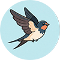

衡水体 · 英文生成器
这款衡水体英文生成器，专为中高考应试书写而生。它能将任意输入的英文，一键转化为规范、整洁的衡水体字帖。生成的字形严格遵循衡水体精髓：圆润饱满、无勾无连，每个字母大小均匀、重心平稳、微微右倾，确保扫描后卷面清晰美观，有效规避连笔造成的误判。工具提供可调节的辅助线设置，并支持浅色描摹模式与标准打印模式切换，满足从临摹到对照书写的进阶需求。无论是制作字母专项训练，还是生成篇章模写素材，它都是助力学生快速练成“高分卷面体”的提分利器。
立即使用
衡水体 · 中文生成器
这款衡水体中文生成器，将衡水体整洁、清晰的理念延伸至汉字书写。它能把输入的文本，自动排版生成米字格或田字格字帖，生成的字迹力求结构端庄、大小均一、不连笔，整体卷面效果干净利落，尤其适合追求工整度的考试场景。工具既内置了《通用规范汉字表》等海量练字内容，也支持用户自由定制文本，实现课文同步默写或高频考点词练习。通过调控字体的灰度深浅，可轻松制作描红、临摹及脱格进阶字帖。一键下载打印，即可拥有专属的提分字帖，是快速改善卷面分的实用工具。
立即使用